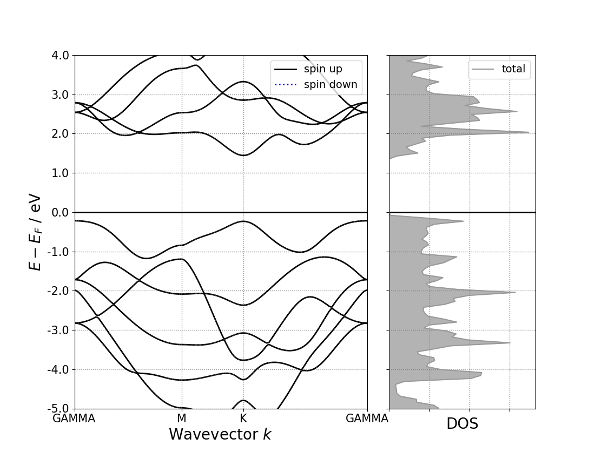
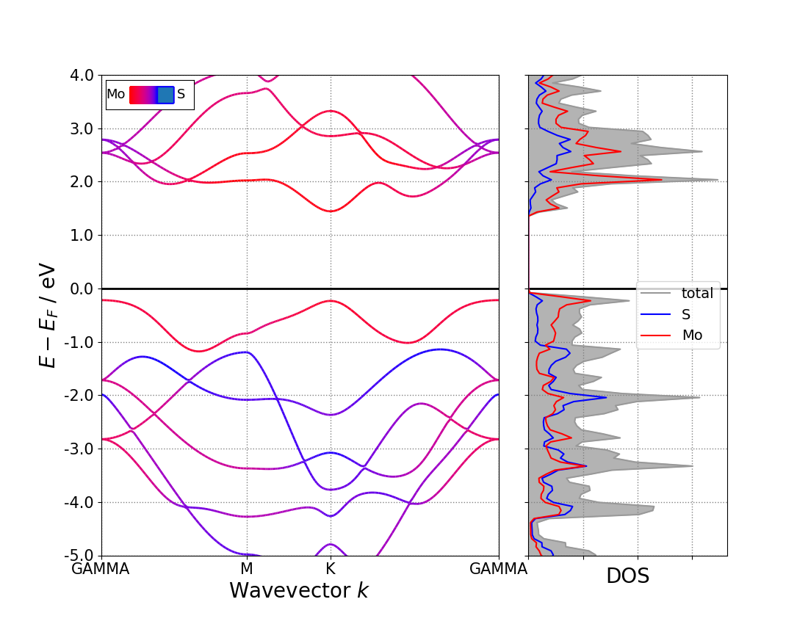
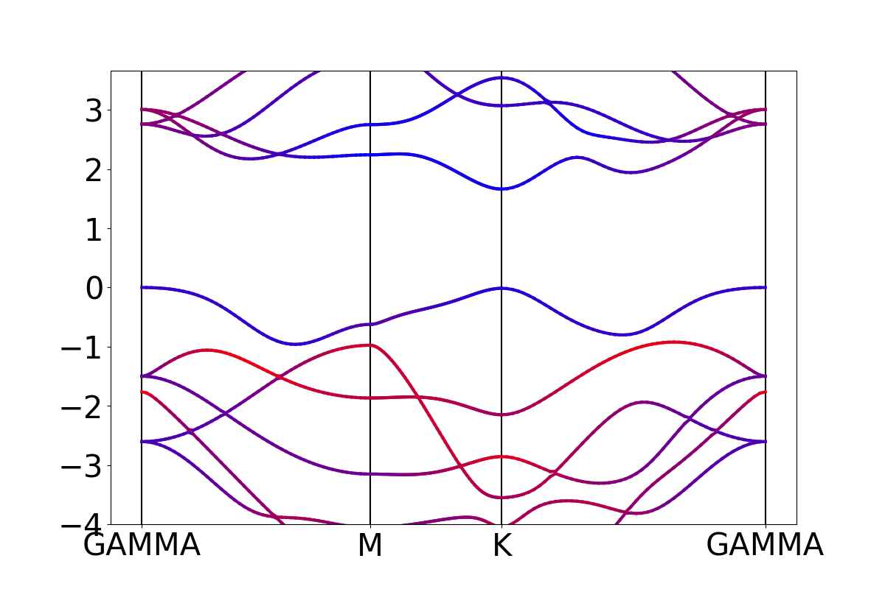

画能带图方法
其中部分代码内容参考张亚君同学的文章： https://mp.weixin.qq.com/s/y7if55laqS-R16It-QGUiw
pymatgen是一款高通量计算材料性质的python包。
http://pymatgen.org/#offline-docs
大名鼎鼎的Materials project就是基于pymatgen的高通量计算基础上建立的计算材料性质数据库。pymatgen已经成为未来材料计算科学发展的总分支，之前非常消耗人力的繁琐计算都可以通过pymatgen进行高通量计算完成。这里介绍一下pymatgen绘制能带图的方法，以http://blog.wangruixing.cn/2019/05/14/band/ 博文中，计算2D材料MoS2的计算结果为例进行处理。：
没有安装过pymatgen的，首先需要安装pymatgen和matplotlib:
pip install pymatgen pip install matplotlib导入用到的python模块：
import matplotlib.pyplot as plt from pymatgen.io.vasp.outputs import Vasprun from pymatgen.electronic_structure.plotter import BSDOSPlotter,\ BSPlotter,BSPlotterProjected,DosPlotter读入vasp的计算结果中的BAND和DOS信息:
bs_vasprun = Vasprun("./vasprun.xml",parse_projected_eigen=True) bs_data = bs_vasprun.get_band_structure(line_mode=True)Vasprun子类中的可选内容很多，都是用于指定读入的vasp计算结果中指定信息的。其中第一个变量一定要有，就是vasprun.xml文件。后面我们做能带图用到的变量就只有parse_projected_eigen
如果是做投影能带，parse_projected_eigen=True要打开，此参数读入所有的投影数据并存入内存（只要计算能带的时候设置 LORBIT >= 10，才有投影信息，建议设置成LORBIT = 11），数据量比较大，默认值是False， Set to True to obtain projected eigenvalues. Note that this can take an extreme amount of time and memory.
然后用get_band_structure函数提取出能带相关的信息，并储存在bs_data变量里。
get_band_structure(kpoints_filename=None, efermi=None, line_mode=False, force_hybrid_mode=False)get_band_structure函数中的line_mode和force_hybrid_mode变量定义读入的K点的类型，做能带图都是在不可约布里渊区走高对称点之间的连线路径，所以line_mode要设置为
True。force_hybrid_mode是2019年5月更新的Pymatgen里增加的新功能，可以用于提取杂化泛函的能带计算结果。
另外两个变量kpoints_filename会自动读入当前目录里的KPOINTS文件，efermi读入vasprun.xml里的费米能级的能量，用于画能带图的时候把VBM shift到0 eV的位置。
这里注意绘制能带图所需要的KPOINTS文件中一定要有高对称点的信息，比如用line-mode模式的KPOINTS，每个高对称点之后都要有该高对称点的标记符号，
get_band_structure会自动读取这个内容，用于后续的绘图。比如：K-Path Generated by VASPKIT 50 Line-Mode Reciprocal 0.0000000000 0.0000000000 0.0000000000 GAMMA 0.5000000000 0.0000000000 0.0000000000 M 0.5000000000 0.0000000000 0.0000000000 M 0.3333333333 0.3333333333 0.0000000000 K 0.3333333333 0.3333333333 0.0000000000 K 0.0000000000 0.0000000000 0.0000000000 GAMMA同理，可以也读入Dos的信息保存到变量dos_data里：
dos_vasprun=Vasprun("./vasprun.xml")dos_data=dos_vasprun.complete_dos绘制能带图
绘制能带图中能用到模块是
pymatgen.electronic_structure.plotter，其中包含几个子类，和能带图绘制相关的用黑色字体标出：BSDOSPlotter，BSPlotter，BSPlotterProjected，DosPlotter，BoltztrapPlotter，CohpPlotter
我们一个一个来看：
- BSDOSPlotter:
class BSDOSPlotter(bs_projection='elements', dos_projection='elements', \ vb_energy_range=4, cb_energy_range=4, fixed_cb_energy=False,\ egrid_interval=1, font='Times New Roman', axis_fontsize=20,\ tick_fontsize=15, legend_fontsize=14, bs_legend='best', \ dos_legend='best', rgb_legend=True, fig_size=(11, 8.5))Parameters（都是和绘图相关的参数）
- bs_projection (str) – “elements” or None
- dos_projection (str) – “elements”, “orbitals”, or None
- vb_energy_range (float) – energy in eV to show of valence bands
- cb_energy_range (float) – energy in eV to show of conduction bands
- fixed_cb_energy (bool) – If true, the cb_energy_range will be interpreted as constant (i.e., no gap correction for cb energy)
- egrid_interval (float) – interval for grid marks
- font (str) – font family
- axis_fontsize (float) – font size for axis
- tick_fontsize (float) – font size for axis tick labels
- legend_fontsize (float) – font size for legends
- bs_legend (str) – matplotlib string location for legend or None
- dos_legend (str) – matplotlib string location for legend or None
- rgb_legend (bool) – (T/F) whether to draw RGB triangle/bar for element proj.
- fig_size (tuple) – dimensions of figure size (width, height)
bs_projection：是否做投影能带，“elements” or None
dos_projection：是否做投影DOS，“elements”, “orbitals”, or None
vb_energy_range和cb_energy_range控制能带图的能量范围，建议用vb_energy_range和fixed_cb_energy来直接控制能量窗口的能量。
剩下是一些字体和颜色的内容。这里直接用默认参数即可。
绘制原始能带图，先定义个对象banddos_fig：
banddos_fig = BSDOSPlotter(bs_projection=None, dos_projection=None, vb_energy_range=-5, fixed_cb_energy=5)然后给对象赋予BAND和DOS的数据，并生成可用于pymatgen画图的对象：
banddos_fig.get_plot(bs=bs_data, dos=dos_data)最后用pymatgen画图：
plt.savefig('banddos_fig.png', img_format='png')即可输出能带图的图片：

unfold band
汇总一下代码：
import matplotlib.pyplot as plt from pymatgen.io.vasp.outputs import Vasprun from pymatgen.electronic_structure.plotter import BSDOSPlotter,BSPlotter,BSPlotterProjected,DosPlotter # read vasprun.xml，get band and dos information bs_vasprun = Vasprun("./vasprun.xml",parse_projected_eigen=True) bs_data = bs_vasprun.get_band_structure(line_mode=True) dos_vasprun=Vasprun("./vasprun.xml") dos_data=dos_vasprun.complete_dos # set figure parameters, draw figure banddos_fig = BSDOSPlotter(bs_projection=None, dos_projection=None, vb_energy_range=5, fixed_cb_energy=5) banddos_fig.get_plot(bs=bs_data, dos=dos_data) plt.savefig('banddos_fig.png', img_format='png')
通过修改BSDOSPlotter对象的bs_projection和dos_projection参数，可以进一步输出投影能带图，该功能提供了对元素投影的能带 和 对元素或原子轨道投影的DOS 功能，比如：
pbandpdos_fig = BSDOSPlotter(bs_projection='elements', dos_projection='elements',\ vb_energy_range=5, fixed_cb_energy=5)
pbandpdos_fig.get_plot(bs=bs_data, dos=dos_data)
plt.savefig('pbandpdos_fig.png', img_format='png')
可以对元素投影：

- BSPlotter
该子类的可调参数非常少，只有一个bs – A BandStructureSymmLine object. 是输出普通能带图最基本的功能。
band_fig = BSPlotter(bs=bs_data)band_fig.get_plot()plt.savefig('band_fig.png', img_format='png')

该子类有用的功能是比较两个能带：
plot_compare(other_plotter, legend=True)[source]
plot two band structure for comparison. One is in red the other in blue (no difference in spins). The two band structures need to be defined on the same symmetry lines! and the distance between symmetry lines is the one of the band structure used to build the BSPlotter
Parameters
band structure object defined along the same symmetry lines(another) –
Returns
a matplotlib object with both band structures
还有就是绘制布里渊区图：
plot_brillouin()[source]
plot the Brillouin zone
band_fig = BSPlotter(bs=bs_data)band_fig.plot_brillouin()plt.savefig('brillouin_fig.png', img_format='png')

- BSPlotterProjected
BSPlotterProjected是pymatgen.electronic_structure.plotter.BSPlotter的一个子类。和BSPlotter一样，也是只有bs一个参数。
get_elt_projected_plots(zero_to_efermi=True, ylim=None, vbm_cbm_marker=False)
get_elt_projected_plots函数可以绘制fat-band类型的元素投影能带
pband_fig = BSPlotterProjected(bs=bs_data)pband_fig = pband_fig.get_elt_projected_plots()plt.savefig('pband_fat_fig.png',img_format='png')

get_elt_projected_plots_color(zero_to_efermi=True, elt_ordered=None)
get_elt_projected_plots_color函数可以绘制color depends类型的元素投影能带
pband_fig = BSPlotterProjected(bs=bs_data)pband_fig = pband_fig.get_elt_projected_plots_color()plt.savefig('pband_color_fig.png',img_format='png')

get_projected_plots_dots(dictio, zero_to_efermi=True, ylim=None, vbm_cbm_marker=False)
get_projected_plots_dots函数可以绘制投影到指定元素的指定轨道上的能带，用字典规定投影的轨道，例如：{‘Mo’:[‘d’,’s’],’S’:[‘p’]}
pband_fig = BSPlotterProjected(bs=bs_data)pband_fig = pband_fig.get_projected_plots_dots({'Mo':['d','s'],'S':['p']})plt.savefig('pband_orbital_fig.png',img_format='png')

- 杂化泛函能带处理
pymatgen在2019年5月的更新中，支持了杂化泛函的能带图计算。需要在get_band_structure函数里同时打开line_mode=True和force_hybrid_mode=True。
# read vasprun.xml，get band and dos informationbs_vasprun = Vasprun("./vasprun.xml",parse_projected_eigen=True)bs_data = bs_vasprun.get_band_structure(line_mode=True,\ force_hybrid_mode=True)
剩余的代码和纯泛函的能带操作是一样的。
需要注意的是杂化泛函的能带计算也要读入k点信息，所以保证在KPOINTS文件里的高对称k点的后面添加标记，这样get_band_structure函数可以自动的识别这些高对称点，否则，需要手动载入包含k点信息的字典。